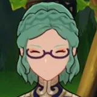

Chương III · Màn I
Xuyên Qua Màn Sương Và Rừng Rậm
Nhiệm vụ Ma Thần — Sumeru
Nhân vật xuất hiện
 Nhân vật chính · Nhà Lữ HànhLumineNhà Lữ Hành đến từ thế giới khác. Bị vị thần lạ mặt phong ấn và cướp mất người anh song sinh, cô bắt đầu hành trình đi tìm Bảy Vị Thần của Teyvat.
Nhân vật chính · Nhà Lữ HànhLumineNhà Lữ Hành đến từ thế giới khác. Bị vị thần lạ mặt phong ấn và cướp mất người anh song sinh, cô bắt đầu hành trình đi tìm Bảy Vị Thần của Teyvat. Bạn đồng hànhPaimonĐược Lumine cứu khỏi chết đuối hai tháng trước, Paimon tự nhận làm người dẫn đường cho cô. Hay ăn, hay nói, và rất ghét bị gọi là “thực phẩm dự trữ”.
Bạn đồng hànhPaimonĐược Lumine cứu khỏi chết đuối hai tháng trước, Paimon tự nhận làm người dẫn đường cho cô. Hay ăn, hay nói, và rất ghét bị gọi là “thực phẩm dự trữ”. Đội Trưởng Kiểm Lâm · Làng GandharvaTighnariNgười thầy của Collei, am hiểu thực vật và bào chế thuốc. Đã nhiều lần từ chối lời mời nhậm chức của Giáo Viện, cùng Lumine đi giải quyết Tử Vực và tìm cách cứu Haypasia.
Đội Trưởng Kiểm Lâm · Làng GandharvaTighnariNgười thầy của Collei, am hiểu thực vật và bào chế thuốc. Đã nhiều lần từ chối lời mời nhậm chức của Giáo Viện, cùng Lumine đi giải quyết Tử Vực và tìm cách cứu Haypasia.- Kiểm lâm tập sự · Làng GandharvaColleiHọc trò của Tighnari, bạn thư từ của Amber ở Mondstadt. Đã đưa Lumine ngất xỉu về làng; từ nhỏ mắc bệnh Eleazar nên phải hạn chế chạm vào đồ vật.
- ANhân viên kiểm lâm · Làng GandharvaAmir và NasrinHai nhân viên kiểm lâm của làng, thường nói chuyện với Tighnari về việc tuần tra, nấm độc và Tử Vực.

Học giả Học Phái Rtawahist · Giáo ViệnHaypasiaHọc giả ẩn cư trong hang núi, dùng Linh Phân Hương để thiền định và kết nối với Cây Thế Giới. Lumine ngất đi vì làn khói hương của cô. Giáo Đoàn Vực SâuSứ Đồ Vực SâuXuất hiện trong giấc mơ của Lumine ở hang núi, nói rằng “Hoàng tử đại nhân” đã bỏ rơi cô và hành trình tìm anh vốn đã không còn ý nghĩa.
Giáo Đoàn Vực SâuSứ Đồ Vực SâuXuất hiện trong giấc mơ của Lumine ở hang núi, nói rằng “Hoàng tử đại nhân” đã bỏ rơi cô và hành trình tìm anh vốn đã không còn ý nghĩa.- GNgười của Giáo ViệnGhulam và KhajehHai người của Giáo Viện đến Làng Gandharva để mời Tighnari về Thành Sumeru, bị Tighnari từ chối.
- PGiáo Viện · Lữ Đoàn 30Panah, Rohawi và AsfandPanah trao Trạm Cuối Akasha cho khách mới đến Thành Sumeru, Rohawi là nhà nghiên cứu quen biết Tighnari, Asfand là cố vấn của Lữ Đoàn 30, nhóm Eremite phụ trách an ninh thành.
- KHiệp Hội Nhà Mạo Hiểm · Thành SumeruKatheryneNhân viên hiệp hội tại Thành Sumeru, cho Lumine biết thêm tình hình và chỉ đường.
 Tiểu thư nhà HomayaniDunyarzadTín đồ trung thành của Tiểu Vương Kusanali, đang chuẩn bị Lễ Hội Sabzeruz. Cho Lumine biết Tiểu Vương Kusanali thật sự được người dân yêu mến.
Tiểu thư nhà HomayaniDunyarzadTín đồ trung thành của Tiểu Vương Kusanali, đang chuẩn bị Lễ Hội Sabzeruz. Cho Lumine biết Tiểu Vương Kusanali thật sự được người dân yêu mến. Eremite · Vệ sĩ của DunyarzadDehyaVệ sĩ của Dunyarzad, mạnh mẽ và thẳng tính, luôn theo sát tiểu thư để bảo vệ cô.
Eremite · Vệ sĩ của DunyarzadDehyaVệ sĩ của Dunyarzad, mạnh mẽ và thẳng tính, luôn theo sát tiểu thư để bảo vệ cô. Vũ công · Đại Khu BazaarNilouVũ công đang cùng mọi người trang trí Đại Khu Bazaar và chuẩn bị điệu múa cho Lễ Hội Sabzeruz, mời Lumine đừng bỏ lỡ lễ hội.
Vũ công · Đại Khu BazaarNilouVũ công đang cùng mọi người trang trí Đại Khu Bazaar và chuẩn bị điệu múa cho Lễ Hội Sabzeruz, mời Lumine đừng bỏ lỡ lễ hội.- Học giả · Giáo ViệnAlhaithamHọc giả của Giáo Viện, muốn nghiên cứu “Hũ Tri Thức Thần”. Cùng Lumine truy tìm nó ở Cảng Ormos, rồi giao đấu với nhóm Ayn Al-Ahmar.
- Thương nhân bách hóa · Cảng OrmosDoriThương nhân mê Mora ở Cảng Ormos, bán đủ thứ hàng và tình báo. Giúp Lumine tìm ra manh mối về Hũ Tri Thức Thần.
- TNhóm Eremite Ayn Al-AhmarTariq và TumartThành viên của Ayn Al-Ahmar, những người tôn thờ Vua Deshret và giữ trong tay “Hũ Tri Thức Thần”.
- HNhững người khácHọc sinh Giáo Viện và người dân SumeruCác học sinh và người dân Thành Sumeru, Cảng Ormos gặp trên đường đi: Lambad, Muruwa, Hamasa, Sharaf, Aftab, Kumari, Shrimati, Farhad, Rama, Pooria, Jayant, Elham, Sidhu, Bandi, Kudari, Eymen, Latish, Raunak.
Các phần
- Phần 1Gặp Nạn Trong Rừng
- Phần 2Theo Dõi Sức Khỏe
- Phần 3Bệnh Nan Y
- Phần 4Người Mưu Cầu Tri Thức Trầm Lặng
- Phần 5Tung Tích Của Thần Trí Tuệ
- Phần 6Tìm Vật Nơi Phồn Hoa
- Phần 7Gần Ngay Trước Mắt
- Phụ LụcLời Thoại Phụ
Toàn bộ lời thoại được lấy từ bản tiếng Việt chính thức của trò chơi. Ở những đoạn người chơi được chọn câu trả lời, truyện chọn một lựa chọn duy nhất.